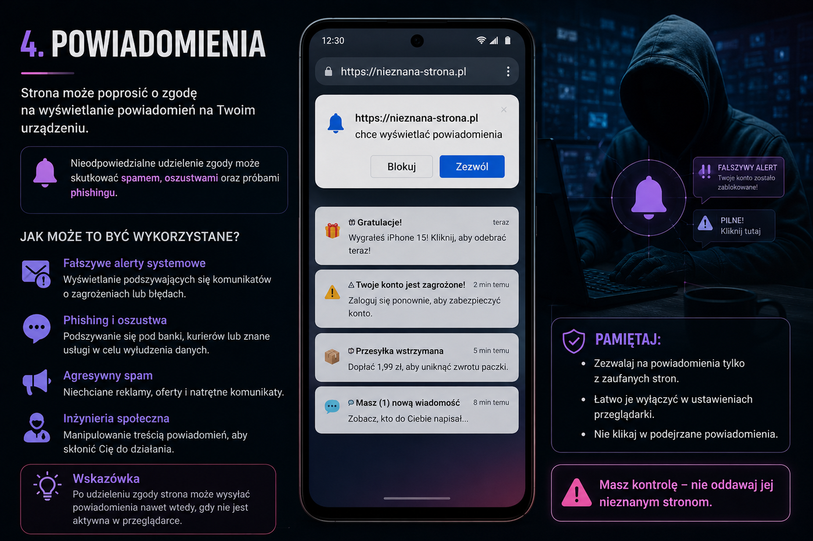

4. Powiadomienia
Fałszywy alert może wrócić później
Kliknięcie przycisku poniżej uruchamia prawdziwy monit przeglądarki albo bezpieczny odczyt lokalny. Nic nie jest wysyłane na serwer.

Pokaz
Nie uruchomiono.
Jak może to być wykorzystane?
1. Fałszywe alerty systemowe
Fałszywe alerty systemowe: „konto zablokowane”, „wirus wykryty”, „pilne logowanie”.
2. Phishing po czasie
Phishing po czasie: powiadomienie może pojawić się później, kiedy użytkownik zapomni, że wyraził zgodę.
3. Spam i presja
Spam i presja: komunikaty mogą nakłaniać do szybkiego kliknięcia.
Na co uważać:
Nie zezwalaj na powiadomienia z przypadkowych stron. W ustawieniach przeglądarki możesz je później cofnąć.
Nie zezwalaj na powiadomienia z przypadkowych stron. W ustawieniach przeglądarki możesz je później cofnąć.